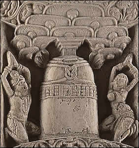

Stupa
After many years of teaching, the Buddha died at the age of 80. His body was cremated and his ashes were divided into eight parts. The ashes were then deposited in several special mound-shaped monuments called 'stupas'. Umbrellas were often mounted at the top of stupas as a sign of honour and respect. When stupas appear in Buddhist art, they are either showing actual stupas, or they symbolize the Buddha's death. |